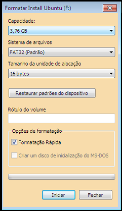

Como instalar o Ubuntu a partir de um Pen drive(){
Dicas
Por:Andrêssa Finzi e Arthur Morais de Andrade
A instalação do Ubuntu através de um pen drive é cheia de vantagens, pois, além de ser uma ótima opção para quem possui netbooks, que não têm drive de entrada CD/DVD, economiza dinheiro e ajuda o meio ambiente, não sendo necessário queimar um CD para gravar a imagem baixada. Neste tutorial serão abordadas duas maneiras de fazer isso, pelo próprio Ubuntu e pelo Windows.
Pré -requisitos:
a) Para poder criar um pen drive bootável, o primeiro pré-requisito é que seu pen drive tenha no mínimo 1 GB de armazenamento.
b) O segundo pré-requisito é que o sistema de arquivos do seu pen drive esteja formatado em FAT32, como na figura abaixo. Para isso vá em “Meu Computador”, clique direto no pen drive e selecione "Formatar", escolha FAT32 e formate.

c) Baixe a imagem .iso do CD de instalação do Ubuntu que pode ser encontrado com a última versão estável na página oficial do Ubuntu clicando aqui , esta imagem será usada posteriormente.
d) Por último é necessário configurar sua BIOS para que ela possa dar o primeiro boot pelo dispositivo USB.
Pelo Windows:
a)Para criar um pen drive bootável, baixe o programa Unetbootin clicando aqui .
b)Basta dar um duplo-clique para o Unetbootin se iniciar, selecione "Imagem de disco (ISO)" e localize a imagem do Ubuntu, depois é só clicar em ok.

c) Após a instalação completa, clique em Reiniciar Agora, e não esqueça de dar o boot pela USB quando entrar no menu da BIOS.

d)Quando der o boot pela USB, a instalação do Ubuntu é igual como se fosse pelo CD, para isso sugiro este site como complemento: hamacker.santhanna.net
Pelo Ubuntu:
a) Se você tem o Ubuntu 8.10 ou algum mais atual, não é necessário baixar nenhum programa para transformar o seu pen drive em um instalador do Ubuntu, basta abrir o “Criador de disco de arranque USB” que se encontra em "Sistema" – "Administração" – "Criador de disco de arranque USB".

b)Após abrir o programa clique em “Outro” e selecione a imagem .iso que você fez download.

c)Em seguida selecione o pen drive que você quer transformar em um dispositivo de arranque.

d) Agora basta clicar em "Criar Disco de Arranque" e esperar terminar o processo. Quando o computador for reiniciado ele já irá dar boot pelo pen drive.

Referência:
ubuntued
ubuntu.com
}